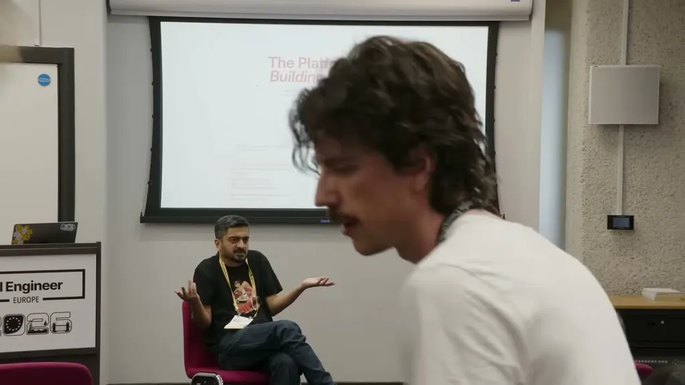
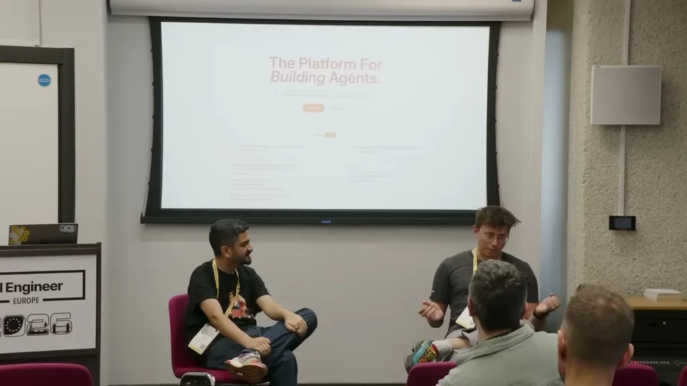
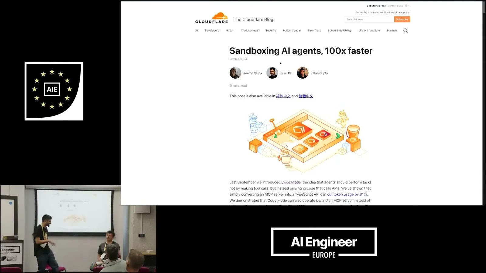

The talk frames durable objects as 'stateful serverless': a class spins up once per ID and every future request or websocket connection lands in the same place, avoiding the need for an external database to hold state. Cloudflare's network gives roughly 15ms latency in London, which the speakers say is fast enough for real-time collaborative tools like TLDraw and, they argue, makes durable objects the right unit for building AI agents that need to be addressable, long-running, and able to hibernate.
“we call this stateful serverless, which is the most confusing thing, because servers are stateful”
▶ watch at 03:04“because of the Cloudflare magical planetary network, it means like in London you get like 15 ms latency”
▶ watch at 03:10
Dynamic workers let a worker take a string of code, generated by a user, customer, or LLM, and run it instantly in its own isolated worker rather than deploying it separately. The sandbox model starts from zero access: the code can only run JavaScript, with no fetch, APIs, or environment variables unless explicitly granted, which the speakers contrast with sandboxes that start from a VM/container and add security around it.
“I have this string of code that a customer sent me or a user sent me or an LLM generated. And I'm going to run that piece of code in its own isolated worker.”
▶ watch at 07:09“The only thing you can run is JavaScript in it, but it has no access to fetch, no APIs, nothing”
▶ watch at 08:41
One speaker previews a separate talk on 'code mode,' which uses dynamic workers to expose Cloudflare's full API surface, described as 2,600 endpoints, to an MCP server using only about 1,000 tokens, instead of describing every endpoint as a tool definition.
“how you can use code mode in your MCP server to give access to all 2,600 API endpoints of Cloudflare in just only 1,000 tokens”
▶ watch at 09:43
Because durable objects maintain a persistent connection, a client can refresh mid-stream and just reconnect; the object continues emitting bytes from where the stream left off, giving automatic multi-tab and multi-browser sync without a database, replication, or sticky sessions. One speaker frames this as evidence AI interfaces should be multiplayer, contrasting it with the inability to share a live ChatGPT conversation link.
“you just reconnect to it and if there's a stream going on, it just says well, here's the beginning of the stream and I'm just going to continue giving you bytes”
▶ watch at 13:55“I'm a believer that AI should be a multiplayer game”
▶ watch at 13:55The speakers argue that generating JSON payloads to render UI (comparing it to 'Jason Bender') is unnecessary when a sandbox can safely run generated HTML or React directly, as in Claude Artifacts, and that JSON-first patterns exist mainly because platforms lack a primitive for rendering untrusted code. Separately, they attribute Cloudflare's low pricing to a decade-old infrastructure decision to install hardware near ISPs and buy bandwidth in bulk rather than build large data centers.
“Why are you generating JSON? Why don't you just generate HTML or even generate React and then just render that?”
▶ watch at 12:24“We don't build massive data centers. Instead, we install hardware near ISPs. We buy bandwidth in bulk from uh level zero like top level ISPs”
▶ watch at 22:51The through-line across both dynamic workers and code mode is a bet that LLM-generated code, tightly sandboxed at the capability layer, is a cheaper and more general interface than structured JSON/DSL output -- worth watching whether other clouds converge on a similar capability-gated eval() primitive rather than each building bespoke tool schemas (ours).
| Stance | Claim | t |
|---|---|---|
| asserts | Cloudflare calls its durable-object model 'stateful serverless': a class instance persists per ID so state doesn't require an external database. | 03:04 |
| asserts | Cloudflare's planetary network gives around 15ms latency to durable objects from London. | 03:10 |
| asserts | Dynamic workers run a string of user- or LLM-generated code in its own isolated worker on demand. | 07:09 |
| predicts | Code mode will let an MCP server expose all 2,600 Cloudflare API endpoints using only about 1,000 tokens. | 09:43 |
| recommends | Instead of generating JSON to be rendered client-side, teams should generate HTML or React directly and render it. | 12:24 |
| asserts | Durable objects let a client reconnect mid-stream and continue receiving bytes without extra database or sticky-session engineering. | 13:55 |
| asserts | The speaker argues AI interfaces should be multiplayer, unlike current chat products. | 13:55 |
| recommends | Dynamic workers default to zero capabilities: only JavaScript execution with no fetch or API access unless explicitly granted. | 08:41 |
| asserts | Cloudflare's low pricing comes from installing hardware near ISPs and buying bandwidth in bulk instead of building large data centers. | 22:51 |
Machine-readable copy embedded in this page (script#ontology) and in the corpus ontology.